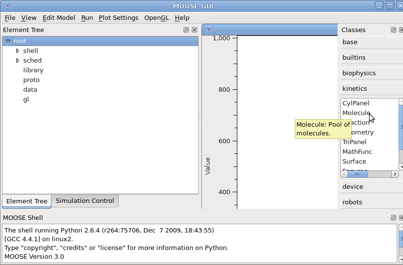
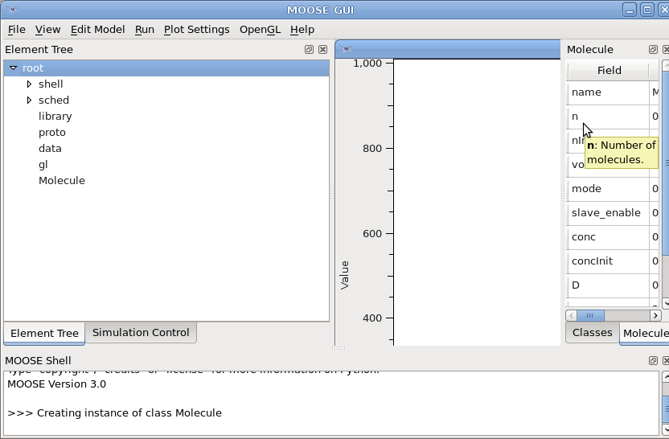

The documentation for MOOSE is work under progress. You can get some
contextual information in the tool tip text (popped up by hovering the
mouse cursor above a class in Class List or a field in
Object Editor.


Moreover you can get detailed documentation on a
class by calling moose.doc() function on the class in the MOOSE
Shell.
print moose.doc(moose.HHChannel)
print moose.doc('HHChannel.channel')
Note that the documentation is formatted with special characters for
printing in a terminal. Thus you have to call print on the
returned string.